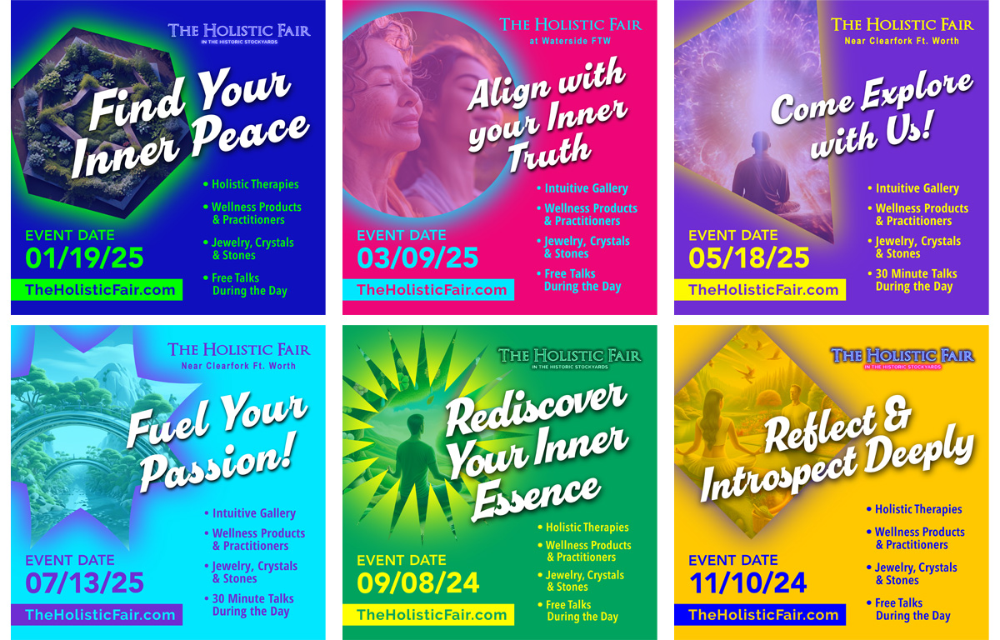

The Holistic Fair
Social Media Graphics
Role: Graphic Designer
Programs: Photoshop & Illustrator
Year: 2025

Developed a series of social media graphics to promote The Holistic Fair. This fair happens every two months. The business owner wanted a vibrant set of media to promote the upcoming events. This is set 1 of 3 unique campaigns that were used throughout the year.
Challenges: Keep the content fresh without looking like the same template post for the event each month.
Project Outcome: The business owner was very excited for the fresh set of graphics. It helps to keep the content eye catching even if the content is relatively the same for each event.
Back